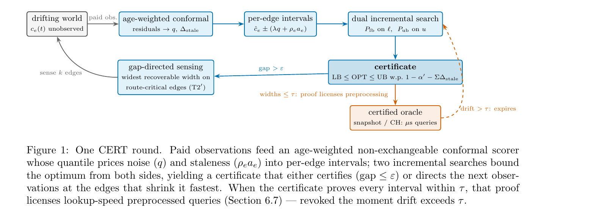

A robot routing through terrain whose costs drift — mud after rain, traffic after an incident — can't answer the one question that matters: how good is my route, now that most of the map is stale? CERT-FLOW answers it every round, with a proof — and spends sensing exactly where the proof is loosest.
The problem
D* Lite, A*, and friends re-find the shortest path on whatever costs they currently hold — silently, whether those costs are fresh or hours stale. Under drift that's a liability: the route looks optimal and may not be, with nothing to flag it. The honest question is a certificate question — bound the true optimum, and act only on what you can prove.
How it works
Each edge carries an estimate, an observation age, and a drift bound. Age-weighted non-exchangeable conformal prediction turns these into intervals that widen with staleness; two incremental searches bound the optimum from both sides; the certificate either certifies or points sensing at the edge that shrinks it fastest.

Every paid observation scored, weighted by age — exchangeability never assumed.
The conformal quantile pays for noise; the drift term pays for staleness.
Optimistic ℓ and conservative u, repaired incrementally on a flat-array engine.
At an honestly-annealed confidence that decays visibly as the map ages.
Route-critical, churn-aware — certification is a rate, not a state (T2′).
When the map is provably tight, ns–µs queries — revoked the instant drift exceeds τ.
See it move
Every clip replays a real run; the coverage and regret numbers shown are measured, not staged. (A note on honesty: on a known static map every planner finds the same optimal path — so these show what actually differs: certificate validity, sensing efficiency, and behaviour under drift.)
CERT's band contains the true optimum every round it claims; AD*'s w-suboptimality band, trusting stale point estimates, drifts out of date.
Certificate validity on benchmark game-map geometry under bounded drift.
Gap-directed sensing converges near a clairvoyant oracle; random / max-age / drive-blind wander at equal budget.
Exchangeable conformal (CIA, its own construction) covers at gap 0, then collapses with staleness; CERT widens to hold.
Videos render from scripts/viz_compare.py and the visualization suite — reproducible like every other number here.
Where it stands
| prior family | drift-aware intervals | path-cost certificate | online incremental | gap-directed sensing |
|---|---|---|---|---|
| D* Lite / AD* | ✕ | ✕ | ✓ | ✕ |
| Conformal sums (CIA, CQR-GAE) | ✕ | ✓ | ✕ | ✕ |
| TASP / FreMEn | ✓ | ✕ | ✕ | ✕ |
| CTP + sensing / IPP | ✕ | ✕ | ✕ | ✓ |
| CERT-FLOW | ✓ | ✓ | ✓ | ✓ |
Each prior family misses at least two of the four properties whose conjunction CERT occupies. Full numbers, negatives, and boundaries in docs/results.
The theory
Use it
# clone, install, test git clone https://github.com/Archerkattri/CERT-FLOW cd CERT-FLOW python -m venv cert_env && source cert_env/bin/activate pip install -e ".[dev,fast]" pandas h5py tables pytest # 227 tests
Every figure regenerates from a script; the core sweep runs in ~100 s.
@article{attri2026certflow,
author = {Attri, Krishi},
title = {{CERT}: Certified Route Planning
under Drifting Costs},
year = {2026},
doi = {10.31224/7306}
}